服务器内添加了枪械模组
模组概况
模组名：Better Guns Addon
地址：https://mcpedl.com/better-guns-addon/
具体内容如下：
- 添加了5 种类型的枪支
分别是：步枪 霰弹枪 手枪 虚拟现实枪 SMG
如何玩？
如何开枪
对于电脑玩家
射击：使用右键进行射击
装弹：将子弹装备的副手（左手）上，在右手（物品栏）为空的情况下按下Shift键
对于手机玩家
射击：长按屏幕射击
装弹：将子弹装备的副手（左手）上，在右手（物品栏）为空的情况下按下潜行
造枪第一步！造零件
零件制造台的合成
造枪第一步！合成 零件制造台（part builder） 吧！
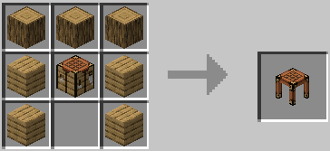
TIP:零件制造台可以用于合成枪支零部件 所以要合成枪支的话，先使用零件制造台制造零部件吧！子弹也是使用零件制造台制造！
握杆和合成
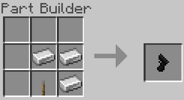
短枪管的合成
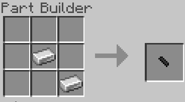
长枪管的合成
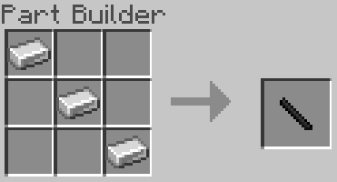
普通子弹的合成
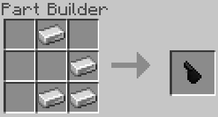
狙击枪子弹的合成
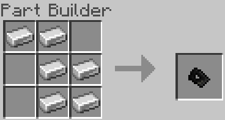
爆炸手榴弹的合成
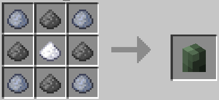
第二步，合成 枪支锻造台（gun forge） 吧！
TIP:需要先使用零件制造台制造零件！
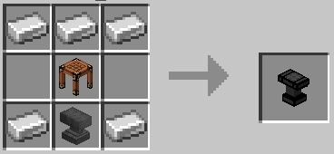
步枪
猎枪
手枪
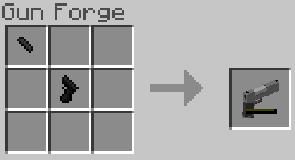
VR枪
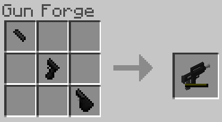
SMG
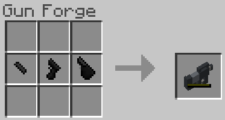